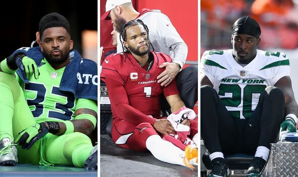
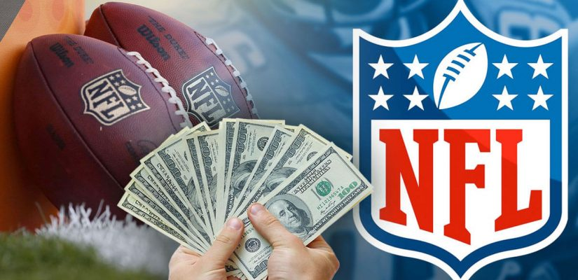

 Opinions on injuries in the NFL might differ. Opinions on injuries in the NFL might differ. Concerns regarding player safety and the long term consequences of injuries like concussion, which have drawn more attention recently, may exist among certain individuals. While advocating for improved safety rules and steps to safeguard participants, some people may still find enjoyment in the sport. All things considered, the NFL has made efforts to address player safety through rule modification, better equipment and concussion protocols, even though injuries are an inherent risk in any contact sport
 The NFL's influence on the sports betting market stems from its massice popularity and the advent of legal sport betting in various states. The league's prominence attracts both casual and dedicated fans, driving up interset and participation in betting. Additionally, the NFL's partnership with sportbooks, fantasy football leagues, and daily fantasy sport platforms further fuels this market by providing fans with various avenues to engage with the sport through betting.